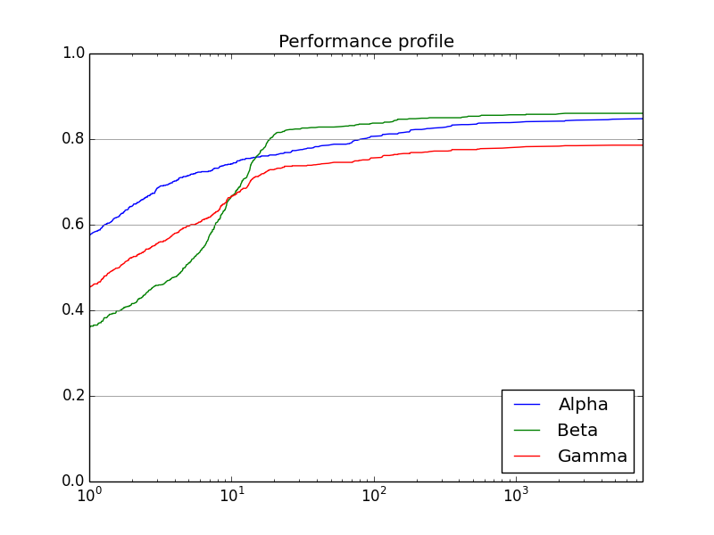

perprof-py - A Python Package for Performance Profiling
Benchmarking optimization packages is very important in the optimization
field, not only because it is one of the ways to compare solvers, but also to
unconver deficiencies that could be overlooked.
